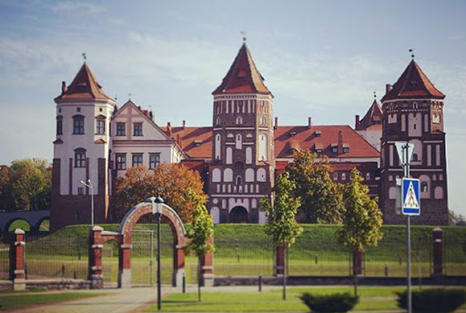

| Главная | Софийский собор | Озеро Нарочь | Борисоглебская церковь | Брестская крепость | Мирский замок | Беловежская пуща | Несвижский замок |
|---|
Ми́рский за́мок (белор. Мірскі замак), За́мково-па́рковый ко́мплекс «Мир» (белор. Замкава-палацавы комплекс «Мір») — оборонительное укрепление и резиденция в городском посёлке (пгт) Мир Кореличского района Гродненской области Белоруссии. Памятник архитектуры, внесён в список Всемирного наследия ЮНЕСКО (с 2000 года). Архитектурный комплекс включает в себя замок XVI—XX веков, валы XVII—XVIII веков, пруд 1896—1898 годов, часовню-усыпальницу Святополк-Мирских с домом сторожа и воротами, пейзажный и регулярный парки, дом управляющего. Находится в г. п. Мир, на правом берегу реки Миранки[1]. Построенный в начале XVI в. магнатом Ю. И. Ильиничем замок стал первым частнособственническим замком на землях Белоруссии[2][3]. С 1568 г. замком владели Радзивиллы (до 1828), потом Витгенштейны (до 1891). Последними владельцами замка были князья Святополк-Мирские (до 1939), после чего с приходом советской власти замок стал государственной собственностью. Мирский замок является самым восточным готическим сооружением, а также самым крупным и единственным не культовым объектом из сохранившихся немногих образцов самобытной белорусской готики[4]. Замок по строению похож на квадрат со стороной около 75 метров, по углам расположены пятиэтажные башни высотой 25—27 м, которые выходят за пределы стен. Пятая башня — шестиэтажная с въездными воротами[5]. Комплекс участвовал практически во всех войнах, которые проносились в своё время на белорусской земле: